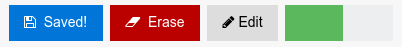
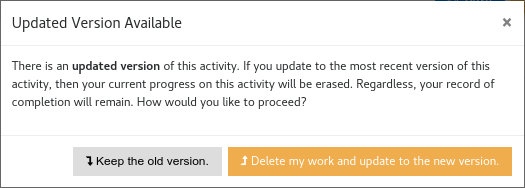

We explain how your work is scored.
We want you to learn from this text. Hence, we ask questions to “push” your
thinking, and leave blanks in examples to ensure you are following along. We
encourage you to keep a notebook where you write each question and your answers,
along with each major theorem and example. In essence we want you to imagine that
we are writing mathematics together, and thus are exploring a new world of
mathematics together.
With this in mind, your work is graded on the basis of its correct completion. The
green bar above

tells you how close you are to completion. We hope that you can complete each
activity and see a full green bar:
However, sometimes there is a bug that prohibits a “full green bar.” In that case, do
not despair, as we take these bugs into account when grading. Moreover,
please let us know any issues you are having. If possible we will fix the
issue.
If a correction is made then we may make an update. In this case an orange button
will appear at the top of the screen:
If you click the “update” button, a dialog will appear: 
If you update your work, the current activity will be replaced by a new activity. Since
your previous work was for the previous incarnation of the activity, your
previous work will be deleted. However, if you’ve completed the activity, your
record of completion remains. You can witness this by selecting another
activity, and observing your green-bar for the updated activity. Unfortunately,
if your activity was not complete before you updated and you want a full
green-bar on the updated activity, you will have to complete the activity
again.
We simply want you to learn and to provide you with the best possible learning
experience.
Are you ready to start learning some Calculus!?!
Yes I am!
We promise the real course will not be this corny.